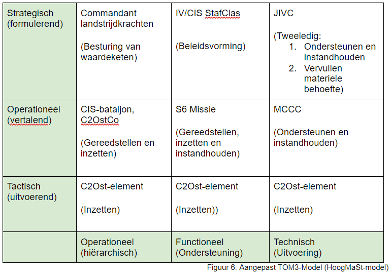

Na het opstellen van de hoofd- en deelvragen in het Plan van Aanpak, zijn we begonnen met het Literatuuronderzoek. In dit onderzoek zijn veel verschillende aspecten behandeld m.b.t. datacompressie. Hieronder een klein overzicht.
Hieronder staan de resultaten van het onderzoek naar verschillende datacompressietechnieken. De resultaten vallen over het algemeen tegen. Er is weinig winst en vooral verlies. Alleen bij .txt bestanden met het zip algoritme is winst te behalen. Hier is dan ook vervolgonderzoek naar gedaan. Ook vallen de resultaten tegen omdat deze technieken al redelijk gecomprimeerd zijn vanuit zichzelf. Hierdoor is er weinig compressie meer mogelijk.
Het TOM3-Model paste niet helemaal bij ons project. Wij hebben een eigen model gemaakt op basis van het TOM3-Model. Deze is hieronder te zien.
Ik vind dat ons onderzoek geslaagd is. Ons doel was van tevoren om een advies en werkend prototype te leveren aan Defensieen dat is ons gelukt. Ik denk dat Defensie veel heeft aan ons onderzoek zodat ze zelf door kunnen gaan met de onderzoeken.